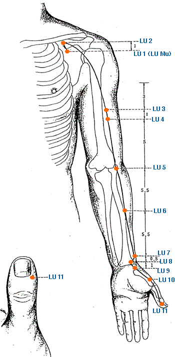

|

|
Meridian Point : LU-1
Location: 6 cun lateral to the anterior midline, level with the 1st ICS.
English Name: Central Treasury
Pinyin Name: Zhong Fu
Actions & Effect:
Lung Front MU Point - useful for all LU Issues, especially of Excess Type - cough, wheezing, asthma.
LU disharmonies involving Phlegm/Heat excess arising from the middle warmer - vomiting, difficult ingestion.
Disease
Cough, asthma, distending fullness of lung, supression in the chest, pain in chest, shoulder and back
Meridian Point : LU-2
Location: 6 cun lateral to the anterior midline, below the clavicle in a depression medial to the coracoid process.
English Name: Cloud Gate
Pinyin Name: Yun Men
Actions & Effect:
Similar to LU 1 but used more often as a local shoulder point.
Cough, asthma, tension in the chest.
Disease
Cough, asthma, pain in chest, shoulder and back
Meridian Point : LU-3
Location: 3 cun below the axillary fold on the radial side of the biceps brachii tendon.
English Name: Celestial Storehouse
Pinyin Name: Tian Fu
Actions & Effect:
Window of the Sky Point, regulates head/body Qi flow - goiters, swellings in the neck.
Lung related spirit disharmonies - stress induced asthma, poor memory, fuzzy/muddled thinking, depression, "floating corpse ghost talk", "melancholy crying ghost talk" (classical descriptions possibly for seeing ghost, talking about ghosts a/or people who have died, being in constant long-term grief about someone who has passed, etc.).
LV invading the LU pathologies.
Generally for heat related issues whether from excess or deficiency - nosebleed, coughing blood.
Disease
Dyspnea, epistaxis, pain in the medial portion of the upper arm.
Meridian Point : LU-4
Location: 1 cun below LU 3 on the radial side of the biceps brachii muscle, on the LU 3 to LU 5 line.
English Name: Guarding White
Pinyin Name: Guarding White
Actions & Effect:
Local Point.
May be used for cough, shortness of breath, chest pain, heart pain.
Pain in the medial aspect of the upper arm.
Disease
Cough, irritable and distending sensation in the chest, pain in the medial portion or the upper arm.
Meridian Point : LU-5
Location:At the cubital crease on the radial side of the biceps brachii tendon.
English Name: Cubit Marsh
Pinyin Name: Chi Ze
Actions & Effect:
He Sea Point - useful for counterflow Qi/diarrhea, hot skin conditions, phlegm-heat excess.
Acute/Chronic or Exterior/Interior Conditions.
Upper body edema, enuresis.
Local point for the elbow - tendonitis, tennis elbow.
Classically noted for the 5 types of Lumbar Pain - possibly the upper body equivalent of UB 40.
Disease
Cough, dyspnea, afternoon fever, sore throat, dryness of the tongue, fullness in the chest, pain of the elbow and arm, vomiting
Meridian Point : LU-6
Location:7 cun above LU 9 on the line joining LU 5 and LU 9.
English Name: Collection Hole
Pinyin Name: Kong Zui
Actions & Effect:
Xi Cleft Point - for Acute attacks of OPI's, usually wind-heat or wind-dry - cough, wheezing, asthma, sore throat.
Dry hacking cough, especially at night.
Local point for pain along the meridian, especially at the joints.
Disease
Cough, dyspnea, sore throat, aphonia, headache
Meridian Point : LU-7
Location:1.5 cun above the wrist crease, superior to the styloid process of the radius (not on the LU 5 - LU 9 line in TCM). Japanese LU 7 is found proximal to the styloid process and it is on the LU 5 - LU 9 line.
English Name: Broken Sequence
Pinyin Name: Lie Que
Actions & Effect:
Exterior Wind - body aches, chills/fever, runny nose, scratchy throat, sneezing.
Internal Wind - bell's palsy, twitching, spasms, lockjaw.
As Master Point of the CV, paired with KD 6 of the Yin Qiao Mai - treats genitourinary and gynecological issues also Yin deficient sore throat.
Command Point of the Head and Posterior Neck - useful for any conditions involving these areas.
Pain of the thumb - Luo Connecting Point spreads over the thenar eminence.
Disease
Cough, asthma, migraine, stiff neck, sore throat, toothache, distorted face, feverish urination, feverish sensation in the palms
Meridian Point : LU-8
Location: 1 cun above LU 9 on the line joining LU 5 & LU 9.
English Name:Channel Ditch
Pinyin Name:Jing Qu
Actions & Effect:
Not as broad of an effect as LU 7, still useful for expelling wind, tonifying Qi and Yin.
Pain in the area of KD 1 - plantar fascitis.
Wrist pain - carpal tunnel syndrome.
Disease
Cough, asthma, sore throat, pain in the chest, back and wrist
Meridian Point : LU-9
Location: At the wrist crease on the radial side of the radial artery.
English Name: Great Abyss
Pinyin Name: Tai Yuan
Actions & Effect:
Tonify LU Qi and Yin - cough, asthma, wheezing, SOB, chronic runny nose w/watery discharge.
Palpitations.
Wrist pain, arm pain along meridian.
Hui Meeting Point of the Vessls - circulation issues, clarifying an indescernible pulse (for diagnosis).
Disease
Cough, asthma, sore throat, pain in the chest and back, feverish sensation in the palms, weakness and pain of the wrist
Meridian Point : LU-10
Location: On the radial aspect of the 1st metacarpal at the midpoint of the bone at the junction of the red and white skin.
English Name: Fish Border
Pinyin Name: Yu Ji
Actions & Effect:
Clear Excess or Deficiency Heat from the LU Channel and Organ.
Sore throat w/excess heat.
Reckless bleeding from heat.
Disease
Cough, aphonia, sore throat, feverish sensation in the palms
Meridian Point : LU-11
Location: .1 cun posterior to the thumb nail on the radial side
English Name: Lesser Shang
Pinyin Name: Shao Shang
Actions & Effect:
Extreme sore throat (may bleed point to reduce heat).
Revival point especially from wind-stroke.
Disease
Cough, asthma, sore throat, abdominal fullness, mania
|